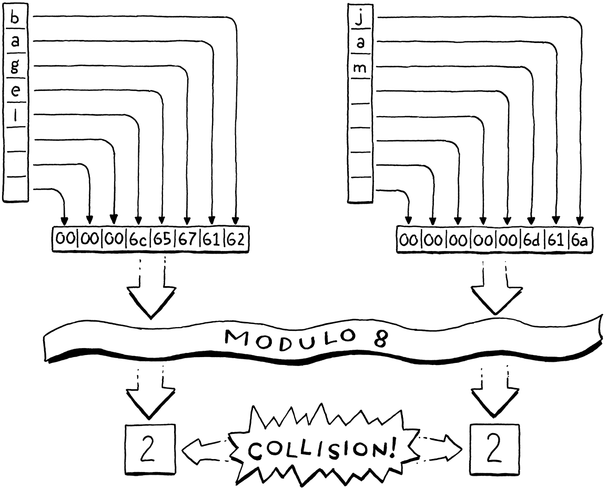
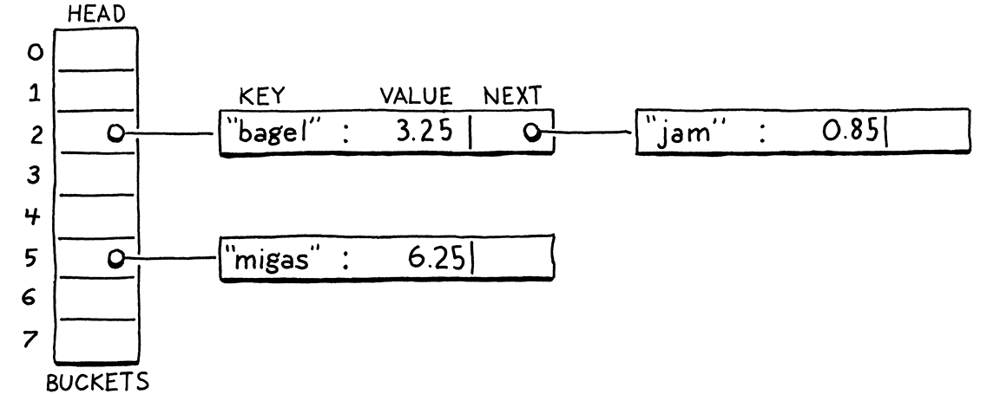
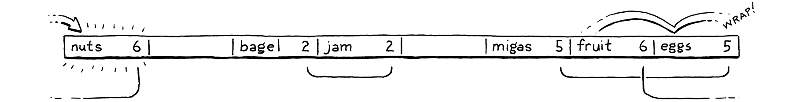
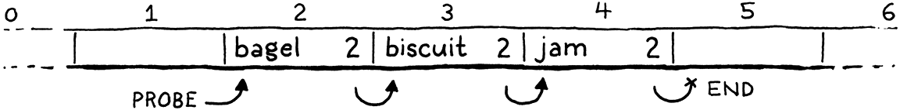
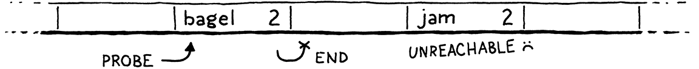
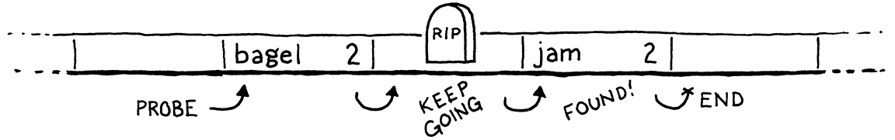

Hash Tables
This book is a work in progress!
×If you see a mistake, find something unclear, or have a suggestion, please let me know. To follow its progress, please join the mailing list:
(I post about once a month. Don’t worry, I won’t spam you.)
Hash, x. There is no definition for this word—nobody knows what hash is.
Ambrose Bierce, The Unabridged Devil’s Dictionary
Before we can add variables to our burgeoning virtual machine, we need some way to look up a value given a variable’s name. Later, when we add classes, we’ll also need a way to store fields on instances. The perfect data structure for these problems and others is a hash table.
You probably already know what a hash table is, even if you don’t know it by that name. If you’re a Java programmer, you call them “HashMaps”. C# and Python users call them “dictionaries”. In C++, it’s an “unordered map”. “Objects” in JavaScript and “tables” in Lua are hash tables under the hood, which is what gives them their flexibility.
A hash table, whatever your language calls it, associates a set of keys with a set of values. Each key/value pair is an entry in the table. Given a key, you can look up its corresponding value. You can add new key/value pairs and remove entries by key. If you add a new value for an existing key, it replaces the previous entry.
Hash tables appear in so many languages because they are incredibly powerful. Much of this power comes from one metric: given a key, a hash table returns the corresponding value in constant time, regardless of how many keys are in the hash table.
That’s pretty remarkable when you think about it. Imagine you’ve got a big stack of business cards and I ask you to find a certain person. The bigger the pile is, the longer it will take. Even if the pile is nicely sorted and you’ve got the manual dexterity to do a binary search by hand, you’re still talking O(log n). But with a hash table, it takes the same time to find that business card when the stack has ten cards as when it has a million.
20 . 1 An Array of Buckets
A complete, fast hash table has a couple of moving parts. I’ll introduce them one at a time by working through a couple of toy problems and their solutions. Eventually, we’ll build up to a data structure that can associate any set of names with their values.
For now, imagine if Lox was a lot more restricted in variable names. What if a variable’s name could only be a single lowercase letter. How could we very efficiently represent a set of variable names and their values?
With only 26 possible variables (27 if you consider underscore a “letter”, I
guess), the answer is easy. Declare a fixed-size array with 26 elements. We’ll
follow tradition and call each element a “bucket”. Each represents a variable
with a starting at index zero. If there’s a value in the array at some
letter’s index, then that key is present with that value. Otherwise, the bucket
is empty and that key/value pair isn’t in the data structure.
Memory usage is great—just a single reasonably-sized array. There’s some waste from the empty buckets, but it’s not huge. There’s no overhead for node pointers, padding, or other stuff you’d get with something like a linked list or tree.
Performance is even better. Given a variable name—its character—you can
subtract the ASCII value of a and use the result to index directly into the
array. Then you can either lookup the existing value or store a new value
directly into that slot. It doesn’t get much faster than that.
This is sort of our Platonic ideal data structure. Lightning fast, dead simple, and compact in memory. As we add support for more complex keys, we’ll have to make some concessions, but this is what we’re aiming for. Even once you add in hash functions, dynamic resizing, and collision resolution, this is still the core of every hash table out there—a contiguous array of buckets that you index directly into.
20 . 1 . 1 Load factor and wrapped keys
Confining Lox to single-letter variables makes our job as implementers easier, but it’s probably no fun programming in a language that only gives you 26 storage locations. What if we loosened it a little and allowed variables up to eight characters long?
That’s small enough that we can pack all eight characters into a 64-bit integer and easily turn the string into a number. We can then use it as an array index. Or, at least, we could if we could somehow allocate a 295,148 petabyte array. Memory’s gotten cheaper over time, but not quite that cheap. Even if we could make an array that big, it would be heinously wasteful. Almost every bucket will be empty unless users start writing way bigger Lox programs than we’ve anticipated.
Even though our variable keys cover the full 64-bit numeric range, we clearly don’t need an array that large. Instead, we’ll allocate an array with enough capacity for the entries we need, but still some reasonable size. We map the full 64-bit keys down to that smaller range by taking the value modulo the size of the array.
For example, say we want to store “bagel”. We allocate an array with eight elements, plenty enough to store it and more later. We treat the key string as a 64-bit integer. On a little-endian machine like Intel, packing those characters into a 64-bit word puts the first letter, “b”, ASCII value 98 in the least-significant byte. We take that integer modulo the array size (8) to fit it in the bounds and get a bucket index, 2. Then we store the value there as usual.
Using the array size as a modulus lets us map the key’s numeric range down to fit an array of any size. We can thus control the number of buckets independently of the key range. That solves our waste problem, but introduces a new one. Any two variables whose key number has the same remainder when divided by the array size will end up in the same bucket. Keys can collide. For example, if we try to add “jam”, it also ends up in bucket 2:
We do have some control of this by tuning the array size. The bigger the array, the fewer the indexes that get mapped to the same bucket and the fewer the collisions that are likely to occur. Hash table implementers track this collision likelihood by measuring the table’s load factor. It’s defined as the number of entries divided by the number of buckets. So a hash table with five entries and an array of 16 elements has a load factor of 0.3125. The higher the load factor, the greater the chance of collisions.
One way we mitigate collisions is by resizing the array. Just like the dynamic arrays we implemented earlier, we reallocate and grow the hash table’s array as it fills up. Unlike a regular dynamic array, though, we won’t wait until the array is full. Instead, we pick a desired load factor and grow the array when it goes over that.
20 . 2 Collision Resolution
Even with a very low load factor, collisions can still occur. The birthday paradox tells us that as the number of entries in the hash table increases, the chance of collision increases very quickly. We can pick a large array size to reduce that, but it’s a losing game. Say we wanted to store a hundred items in a hash table. To keep the chance of collision below a still-pretty-high 10%, we need an array with at least 47,015 elements. To get the chance below 1% requires an array with 492,555 elements, over 4,000 empty buckets for each one in use.
A low load factor can make collisions rarer, but the pigeonhole principle tells us we can never eliminate them entirely. If you’ve got five pet pigeons and four holes to put them in, at least one hole is going to end up with more than one pigeon. With 18,446,744,073,709,551,616 different variable names, any reasonably-sized array can potentially end up with multiple keys in the same bucket.
Thus we still have to handle collisions gracefully when they occur. Users don’t like it when their programming language can look up variables correctly only most of the time.
20 . 2 . 1 Separate chaining
Techniques for resolving collisions fall into two broad categories. The first is separate chaining. Instead of each bucket containing a single entry, we let it contain a collection of them. In the classic implementation, each bucket points to a linked list of entries. To look up an entry, you find its bucket and then walk the list until you find an entry with the matching key.
In catastrophically bad cases where every entry collides in the same bucket, the data structure degrades into a single unsorted linked list with O(n) lookup. In practice, it’s easy to avoid that by controlling the load factor and how entries get scattered across buckets. In typical separate chained hash tables, it’s rare for a bucket to have more than one or two entries.
Separate chaining is conceptually simple—it’s literally an array of linked lists. Most operations are straightforward to implement, even deletion which, as we’ll see, can be a pain. But it’s not a great fit for modern CPUs. It has a lot of overhead from pointers and tends to scatter little linked list nodes around in memory which isn’t great for cache usage.
20 . 2 . 2 Open addressing
The other technique is called “open addressing” or (confusingly) “closed hashing”. With this technique, all entries live directly in the bucket array, with one entry per bucket. If two entries collide in the same bucket, we find a different empty bucket to use instead.
Storing all entries in a single big contiguous array is great for keeping the memory representation simple and fast. But it makes all of the operations on the hash table more complex. When inserting an entry, its bucket may be full, sending us to look at another bucket. That bucket itself may be occupied and so on. This process of finding an available bucket is called probing and the order that you examine buckets is a probe sequence.
There are a number of algorithms for determining which buckets to probe and how to decide which entry goes in which bucket. There’s been a ton of research here because even slight tweaks can have a large performance impact. And, on a data structure as heavily used as hash tables, that performance impact touches a very large number of real-world programs across a range of hardware capabilities.
As usual in this book, we’ll pick the simplest one that gets the job done efficiently. That’s good old linear probing. When looking for an entry, we look in the first bucket its key maps to. If it’s not in there, we look in the very next element in the array, and so on. If we reach the end, we wrap back around to the beginning.
The good thing about linear probing is that it’s cache friendly. Since you walk the array directly in memory order, it keeps the CPU’s cache lines full and happy. The bad thing is that it’s prone to clustering. If you have a lot of entries with numerically similar key values, you can end up with a lot of colliding overflowing buckets right next to each other.
Compared to separate chaining, open addressing can be harder to wrap your head around. I think of open addressing as similar to separate chaining except that the “list” of nodes is threaded through the bucket array itself. Instead of storing the links between them in pointers, the connections are calculated implicitly by the order that you look through the buckets.
The tricky part is that more than one of these implicit lists may be interleaved together. Let’s walk through an example that covers all the interesting cases. We’ll ignore values for now and just worry about a set of keys. We start with an empty array of 8 buckets:
We decide to insert “bagel”. The first letter, “b” (ASCII value 98), modulo the array size (8) puts it in bucket 2:
Next, we insert “jam”. That also wants to go in bucket 2 (106 mod 8 = 2), but that bucket’s taken. We keeping probing to the next bucket. It’s empty, so we put it there:
We insert “fruit”, which happily lands in bucket 6:
Likewise, “migas” can go in its preferred bucket 5:
When we try to insert “eggs”, it also wants to be in bucket 5. That’s full so we skip to 6. Bucket 6 is also full. Note that the entry in there is not part of the same probe sequence. “Fruit” is in its preferred bucket, 6. So the 5 and 6 sequences have collided and are interleaved. We skip over that and finally put “eggs” in bucket 7:
We run into a similar problem with “nuts”. It can’t land in 6 like it wants to. Nor can it go into 7. So we keep going. But we’ve reached the end of the array, so we wrap back around to 0 and put it there:
In practice, the interleaving turns out to not be much of a problem. Even in separate chaining, we need to walk the list to check each entry’s key because multiple keys can reduce to the same bucket. With open addressing, we need to do that same check, and that also covers the case where you are stepping over entries that “belong” to a different original bucket.
20 . 3 Hash Functions
We can now build ourselves a reasonably efficient table for storing variable names up to eight characters long, but that limitation is still annoying. In order to relax the last constraint, we need a way to take a string of any length and convert it to a fixed-size integer.
Finally, we get to the “hash” part of “hash table”. A hash function takes some larger blob of data and “hashes” it to produce a fixed-size integer whose value depends on all of the bits of the original data. A good hash function has three main goals:
-
It must be deterministic. The same input must always hash to the same number. If the same variable ends up in different buckets at different points in time, it’s gonna get really hard to find it.
-
It must be uniform. Given a typical set of inputs, it should produce a wide and evenly-distributed range of output numbers, with as few clumps or patterns as possible. We want it to scatter values across the whole numeric range to minimize collisions and clustering.
-
It must be fast. Every operation on the hash table requires us to hash the key first. If hashing is slow, it can potentially cancel out the speed of the underlying array storage.
There is a veritable pile of hash functions out there. Some are old and optimized for architectures no one uses anymore. Some are designed to be fast, others cryptographically secure. Some take advantage of vector instructions and cache sizes for specific chips, others aim to maximize portability.
There are people out there for whom designing and evaluating hash functions is, like, their jam. I admire them, but I’m not mathematically astute enough to be one. So for clox, I picked a simple, well-worn hash function called FNV-1a that’s served me fine over the years. Consider trying out different ones in your code and see if they make a difference.
OK, that’s a quick run through of buckets, load factors, open addressing, collision resolution and hash functions. That’s an awful lot of text and not a lot of real code. Don’t worry if it still seems vague. Once we’re done coding it up, it will all click into place.
20 . 4 Building a Hash Table
The great thing about hash tables compared to other classic techniques like balanced search trees is that the actual data structure is so simple. Ours goes into a new module:
create new file
#ifndef clox_table_h #define clox_table_h #include "common.h" #include "value.h" typedef struct { int count; int capacity; Entry* entries; } Table; #endif
A hash table is an array of entries. As in our dynamic array earlier, we keep
track of both the allocated size of the array (capacity) and the number of
key/value pairs currently stored in it (count). The ratio of count to capacity
is exactly the load factor of the hash table.
Each entry is one of these:
#include "value.h"
typedef struct { ObjString* key; Value value; } Entry;
typedef struct {
It’s a simple key/value pair. Since the key is always a string, we store the ObjString pointer directly instead of wrapping it in a Value. It’s a little faster and smaller this way.
To create a new empty hash table, we declare a constructor-like function:
} Table;
add after struct Table
void initTable(Table* table);
#endif
We need a new implementation file to define that. While we’re at it, let’s get all of the pesky includes out of the way:
create new file
#include <stdlib.h> #include <string.h> #include "memory.h" #include "object.h" #include "table.h" #include "value.h" void initTable(Table* table) { table->count = 0; table->capacity = 0; table->entries = NULL; }
As in our dynamic value array type, a hash table initially starts with zero
capacity and a NULL array. We don’t allocate anything until needed. Assuming
we do eventually allocate something, we need to be able to free it too:
void initTable(Table* table);
add after initTable()
void freeTable(Table* table);
#endif
And its glorious implementation:
add after initTable()
void freeTable(Table* table) { FREE_ARRAY(Entry, table->entries, table->capacity); initTable(table); }
Again, it looks just like a dynamic array. In fact, you can think of a hash
table as basically a dynamic array with a really strange policy for inserting
items. We don’t need to check for NULL here since FREE_ARRAY() already
handles that gracefully.
20 . 4 . 1 Hashing strings
Before we can start putting entries in the table, we need to, well, hash them. To ensure that the entries get distributed uniformly throughout the array, we want a good hash function that looks at all of the bits of the key string. If it only, say, looked at the first few characters, then a series of strings that all shared the same prefix would end up colliding in the same bucket.
On the other hand, walking the entire string to calculate the hash is kind of slow. We’d lose some of the performance benefit of the hash table if we had to walk the string every time we looked for a key in the table. So we’ll do the obvious thing: cache it.
Over in the “object” module in ObjString, we add:
char* chars;
in struct sObjString
uint32_t hash;
};
Each ObjString stores the hash code for that string. Since strings are immutable in Lox, we can calculate it once up front and be certain that it will never get invalidated. Caching it eagerly makes a kind of sense: Allocating the string and copying its characters over is already an O(n) operation, so it’s a good time to also do the O(n) calculation of the string’s hash.
Whenever we call the internal function to allocate a string, we pass in its hash code:
function allocateString()
replace 1 line
static ObjString* allocateString(char* chars, int length, uint32_t hash) {
ObjString* string = ALLOCATE_OBJ(ObjString, OBJ_STRING);
That function simply stores the hash in the struct:
string->chars = chars;
in allocateString()
string->hash = hash;
return string;
The fun happens over at the callers. allocateString() is called from two
places: the function that copies a string and the one that takes ownership of an
existing dynamically-allocated string. We’ll start with the first:
ObjString* copyString(const char* chars, int length) {
in copyString()
uint32_t hash = hashString(chars, length);
char* heapChars = ALLOCATE(char, length + 1);
No magic here. We calculate the hash code and then pass it along:
heapChars[length] = '\0';
in copyString()
replace 1 line
return allocateString(heapChars, length, hash);
}
The other string function is similar:
ObjString* takeString(char* chars, int length) {
in takeString()
replace 1 line
uint32_t hash = hashString(chars, length); return allocateString(chars, length, hash);
}
The interesting code is over here:
add after allocateString()
static uint32_t hashString(const char* key, int length) { uint32_t hash = 2166136261u; for (int i = 0; i < length; i++) { hash ^= key[i]; hash *= 16777619; } return hash; }
This is the actual bonafide “hash function” in clox. The algorithm is called “FNV-1a”, and is the shortest decent hash function I know. Brevity is certainly a virtue in a book that aims to show you every line of code.
The basic idea is pretty simple and many hash functions follow the same pattern. You start with some initial hash value, usually a constant with certain carefully chosen mathematical properties. Then you walk the data to be hashed. For each byte (or sometimes word), you munge the bits into the hash value somehow and then mix the resulting bits around some.
What it means to “munge” and “mix” can get pretty sophisticated. Ultimately, though, the basic goal is uniformity—we want the resulting hash values to be as widely scattered around the numeric range as possible to avoid collisions and clustering.
20 . 4 . 2 Inserting entries
Now that string objects know their hash code, we can start putting them into hash tables:
void freeTable(Table* table);
add after freeTable()
bool tableSet(Table* table, ObjString* key, Value value);
#endif
This adds the given key/value pair to the given hash table. If an entry for that
key is already present, the new value overwrites the old one. It returns true
if a new entry was added. Here’s the implementation:
add after freeTable()
bool tableSet(Table* table, ObjString* key, Value value) { Entry* entry = findEntry(table->entries, table->capacity, key); bool isNewKey = entry->key == NULL; if (isNewKey) table->count++; entry->key = key; entry->value = value; return isNewKey; }
Most of the interesting logic is in findEntry() which we’ll get to soon. That
function’s job is to take a key and figure out which bucket in the array it
should go in. It returns a pointer to that bucket—the Entry in the array.
Once we have that, inserting is straightforward. We update the hash table’s size, taking care to not increase the count if we overwrote an already-present key. Then we copy the key and value into the corresponding fields in the entry.
We’re missing a little something here, though. We haven’t actually allocated the entry array yet. Oops! Before we can insert anything, we need to make sure we have an array, and that it’s big enough:
bool tableSet(Table* table, ObjString* key, Value value) {
in tableSet()
if (table->count + 1 > table->capacity * TABLE_MAX_LOAD) { int capacity = GROW_CAPACITY(table->capacity); adjustCapacity(table, capacity); }
Entry* entry = findEntry(table->entries, table->capacity, key);
This is similar to the code we wrote a while back for growing a dynamic array.
If we don’t have enough capacity to insert an item, we reallocate and grow the
array. The GROW_CAPACITY() macro takes an existing capacity and grows it by
a multiple to ensure that we get amortized constant performance over a series
of inserts.
The interesting difference here is that TABLE_MAX_LOAD constant:
#include "value.h"
#define TABLE_MAX_LOAD 0.75
void initTable(Table* table) {
This is how we manage the table’s load factor. We don’t grow when the capacity is completely full. Instead, we grow the array before then, when the array becomes at least 75% full.
We’ll get to the implementation of adjustCapacity() soon. First, let’s look
at that findEntry() function you’ve been wondering about:
add after freeTable()
static Entry* findEntry(Entry* entries, int capacity, ObjString* key) { uint32_t index = key->hash % capacity; for (;;) { Entry* entry = &entries[index]; if (entry->key == key || entry->key == NULL) { return entry; } index = (index + 1) % capacity; } }
This function is the real core of the hash table. It’s responsible for taking a key and an array of buckets and figuring out which bucket the entry belongs in. This function is also where linear probing and collision handling come into play. We’ll use it both to find existing entries in the hash table, and to decide where to insert new ones.
For all that, there isn’t much to it. First, we take the key’s hash code and map it to the array by taking it modulo the array size. That gives us an index into the array where, ideally, we’ll be able to find or place the entry.
There are a few cases to check for:
-
If the key for that entry in the array is
NULL, then the bucket is empty. If we’re usingfindEntry()to look up something in the hash table, this means it isn’t there. If we’re using it to insert, it means we’ve found a place to add it. -
If the key in the bucket is equal to the key we’re looking for, then that key is already present in the table. If we’re doing a look-up, that’s good—we found the key we seek. If we’re doing an insert, this means we’ll be replacing the value for that key instead of adding a new entry.
- Otherwise, the bucket has an entry in it, but with a different key. This is a collision. In that case, we start probing. That’s what that for loop does. We start at the bucket where the entry would ideally go. If that bucket is empty or has the same key, we’re done. Otherwise, we advance to the next element—this is the linear part of “linear probing”—and check there. If we go past the end of the array, that second modulo operator wraps us back around to the beginning.
We exit the loop when we find either an empty bucket or a bucket with the same key as the one we’re looking for. You might be wondering about an infinite loop. What if we collide with every bucket? Fortunately, that can’t happen thanks to our load factor. Because we grow the array as soon as it gets close to being full, we know there will always be empty buckets.
Once we exit the loop, we return a pointer to the found entry so the caller can
either insert something into it or read from it. Way back in tableSet(), the
function that first kicked this off, it stores the new entry in that bucket and
we’re done.
20 . 4 . 3 Allocating and resizing
Before we can put entries in the hash table, we do need a place to actually store them. We need to allocate an array of buckets. That happens in this function:
add after findEntry()
static void adjustCapacity(Table* table, int capacity) { Entry* entries = ALLOCATE(Entry, capacity); for (int i = 0; i < capacity; i++) { entries[i].key = NULL; entries[i].value = NIL_VAL; } table->entries = entries; table->capacity = capacity; }
It creates a bucket array with capacity entries. After it allocates the array,
it initializes every element to be an empty bucket and then stores the array
(and its capacity) in the hash table’s main struct. This code is fine for when
we insert the very first entry into the table, and we require the first
allocation of the array. But what about when we already have one and we need to
grow it?
Back when we were doing a dynamic array, we could just use realloc() and let
the C standard library copy everything over. That doesn’t work for a hash table.
Remember that to choose the bucket for each entry, we take its hash key modulo
the array size. That means that when the array size changes, entries may end up
in different buckets.
We need to recalculate the buckets for each of the existing entries in the hash table. That in turn could cause new collisions which we need to resolve. So the simplest way to handle that is to rebuild the table from scratch by re-inserting every entry into the new empty array:
entries[i].value = NIL_VAL;
}
in adjustCapacity()
for (int i = 0; i < table->capacity; i++) { Entry* entry = &table->entries[i]; if (entry->key == NULL) continue; Entry* dest = findEntry(entries, capacity, entry->key); dest->key = entry->key; dest->value = entry->value; }
table->entries = entries;
We walk through the old array front to back. Any time we find a non-empty
bucket, we insert that entry into the new array. We use findEntry(), passing
in the new array instead of the one currently stored in the Table. (This is
why findEntry() takes a pointer directly to an entry array and not the whole
Table struct. That way, we can pass the new array and capacity before we’ve
stored those in the struct.)
After that’s done, we can release the memory for the old array:
dest->value = entry->value;
}
in adjustCapacity()
FREE_ARRAY(Entry, table->entries, table->capacity);
table->entries = entries; table->capacity = capacity; }
With that, we have a hash table that we can stuff as many entries into as we like. It handles overwriting existing keys and growing itself as needed to maintain the desired load capacity.
While we’re at it, let’s also define a helper function for copying all of the entries of one hash table into another:
bool tableSet(Table* table, ObjString* key, Value value);
add after tableSet()
void tableAddAll(Table* from, Table* to);
#endif
We won’t need this until much later when we support method inheritance, but we may as well implement it now while we’ve got all the hash table stuff fresh in our minds.
add after tableSet()
void tableAddAll(Table* from, Table* to) { for (int i = 0; i < from->capacity; i++) { Entry* entry = &from->entries[i]; if (entry->key != NULL) { tableSet(to, entry->key, entry->value); } } }
There’s not much to say about this. It walks the bucket array of the source hash
table. Whenever it finds a non-empty bucket, it adds the entry to the
destination hash table using the tableSet() function we recently defined.
20 . 4 . 4 Retrieving values
Now that our hash table contains some stuff, let’s start pulling things back out. Given a key, we can look up the corresponding value, if there is one, with this function:
void freeTable(Table* table);
add after freeTable()
bool tableGet(Table* table, ObjString* key, Value* value);
bool tableSet(Table* table, ObjString* key, Value value);
You pass in a table and a key. If it finds an entry with that key, it returns
true, otherwise it returns false. If the entry exists, it stores the
resulting value in the value output parameter.
Since findEntry() already does the hard work, the implementation isn’t too
bad:
add after findEntry()
bool tableGet(Table* table, ObjString* key, Value* value) { if (table->count == 0) return false; Entry* entry = findEntry(table->entries, table->capacity, key); if (entry->key == NULL) return false; *value = entry->value; return true; }
If the table is completely empty, we definitely won’t find the entry, so we
check for that first. This isn’t just an optimization—it also ensures that we
don’t try to access the bucket array when the array is NULL. Otherwise, we let
findEntry() work its magic. That returns a pointer to a bucket. If the bucket
is empty, which we detect by seeing if the key is NULL, then we didn’t find an
entry with our key. If findEntry() does return a non-empty entry, then that’s
our match. We take the entry’s value and copy it to the output parameter so the
caller can get it. Piece of cake.
20 . 4 . 5 Deleting entries
There is one more fundamental operation a full-featured hash table needs to support: removing an entry. This seems pretty obvious, if you can add things, you should be able to un-add them, right? But you’d be surprised how many tutorials on hash tables omit this.
I could have taken that route too. In fact, we only use deletion in clox in a tiny edge case in the VM. But if you want to actually understand how to completely implement a hash table, this feels important. I can sympathize with their desire to overlook it. As we’ll see, deleting from a hash table that uses open addressing is tricky.
At least the declaration is simple:
bool tableSet(Table* table, ObjString* key, Value value);
add after tableSet()
bool tableDelete(Table* table, ObjString* key);
void tableAddAll(Table* from, Table* to);
The obvious approach is to mirror insertion. Use findEntry() to look up the
entry’s bucket. Then clear out the bucket. Done!
In cases where there are no collisions, that works fine. But if a collision has occurred, then the bucket where the entry lives may be part of one or more implicit probe sequences. For example, here’s a hash table containing three keys all with the same preferred bucket, 2:
Remember that when we’re walking a probe sequence to find an entry, we know we’ve reached the end of a sequence and the entry isn’t present when we hit an empty bucket. It’s like the probe sequence is a list of entries and an empty entry terminates that list.
If we delete “biscuit” by simply clearing the entry, then we break that probe sequence in the middle, leaving the trailing entries orphaned and unreachable. Sort of like removing a node from a linked list without relinking the pointer from the previous node to the next one.
If we later try to look for “jam”, we’ll start at “bagel”, stop at the next empty entry, and never find it:
To solve this, most implementations use a trick called “tombstones”. Instead of clearing the entry on deletion, we replace it with a special sentinel entry called a “tombstone”. When we are following a probe sequence during a lookup, and we hit a tombstone, we don’t treat it like an empty slot and stop iterating. Instead, we keep going so that deleting an entry doesn’t break any implicit collision chains and we can still find entries after it:
The code looks like this:
add after tableSet()
bool tableDelete(Table* table, ObjString* key) { if (table->count == 0) return false; // Find the entry. Entry* entry = findEntry(table->entries, table->capacity, key); if (entry->key == NULL) return false; // Place a tombstone in the entry. entry->key = NULL; entry->value = BOOL_VAL(true); return true; }
First, we find the bucket containing the entry we want to delete. (If we don’t
find it, there’s nothing to delete, so we bail out.) We replace the entry with a
tombstone. In clox, we use a NULL key and a true value to represent that,
but any representation that can’t be confused with an empty bucket or a valid
entry works.
That’s all we need to do to delete an entry. Simple and fast. But all of the other operations need to correctly handle tombstones too. A tombstone is a sort of “half” entry. It has some of the characteristics of a present entry, and some of the characteristics of an empty one.
When we are following a probe sequence during a lookup, and we hit a tombstone, we don’t treat it like an empty slot and stop iterating. Instead, we note it and keep going:
Entry* entry = &entries[index];
in findEntry()
replace 3 lines
if (entry->key == NULL) {
if (IS_NIL(entry->value)) {
// Empty entry.
return tombstone != NULL ? tombstone : entry;
} else {
// We found a tombstone.
if (tombstone == NULL) tombstone = entry;
}
} else if (entry->key == key) {
// We found the key.
return entry;
}
index = (index + 1) % capacity;
The first time we pass a tombstone, we store it in this local variable:
uint32_t index = key->hash % capacity;
in findEntry()
Entry* tombstone = NULL;
for (;;) {
If we reach a truly empty entry, then the key isn’t present. In that case, if we
have passed a tombstone, we return its bucket instead of the later empty one. If
we’re calling findEntry() in order to insert a node, that lets us treat the
tombstone bucket as empty and reuse it for the new entry.
Reusing tombstone slots automatically like this helps reduce the number of tombstones wasting space in the bucket array. In typical use cases where there is a mixture of insertions and deletions, the number of tombstones grows for a while and then tends to stabilize.
Even so, there’s no guarantee that a large number of deletes won’t cause the
array to be full of tombstones. In the very worst case, we could end up with
no empty buckets. That would be bad because, remember, the only thing
preventing an infinite loop in findEntry() is the assumption that we’ll
eventually hit an empty bucket.
So we need to be thoughtful about how tombstones interact with the table’s load factor and resizing. The key question is, when calculating the load factor, should we treat tombstones like full buckets or empty ones?
20 . 4 . 6 Counting tombstones
If we treat tombstones like full buckets, then we may end up with a bigger array than we probably need because it artificially inflates the load factor. There are tombstones we could reuse, but they aren’t treated as unused so we end up growing the array prematurely.
But if we treat tombstones like empty buckets and don’t include them in the load factor, then we run the risk of ending up with no actual empty buckets to terminate a lookup. An infinite loop is a much worse problem than a few extra array slots, so for load factor, we consider tombstones to be full buckets.
That’s why we don’t reduce the count when deleting an entry in the previous code. The count is no longer the number of entries in the hash table, it’s the number of entries plus tombstones. That implies that we only increment the count during insertion if the new entry goes into an entirely empty bucket:
bool isNewKey = entry->key == NULL;
in tableSet()
replace 1 line
if (isNewKey && IS_NIL(entry->value)) table->count++;
entry->key = key;
If we are replacing a tombstone with a new entry, the bucket has already been accounted for and the count doesn’t change.
When we resize the array, we allocate a new array and re-insert all of the existing entries into it. During that process, we don’t copy the tombstones over. They don’t add any value since we’re rebuilding the probe sequences anyway, and would just slow down lookups. That means we need to recalculate the count since it may change during a resize. So we clear it out:
}
in adjustCapacity()
table->count = 0;
for (int i = 0; i < table->capacity; i++) {
Then each time we find a non-tombstone entry, we increment it:
dest->value = entry->value;
in adjustCapacity()
table->count++;
}
This means that when we grow the capacity, we may end up with fewer entries in the resulting larger array because all of the tombstones get discarded. That’s a little wasteful, but not a huge practical problem.
I find it interesting that much of the work to support deleting entries was in
findEntry() and adjustCapacity(). The actual delete logic is quite simple
and fast. In practice, deletions tend to be rare, so you’d expect a hash table
to do as much work as it can in the delete function and leave the other
functions alone to keep them faster. With our tombstone approach, deletes are
fast, but lookups get penalized.
I did a little benchmarking to test this out in a few different deletion scenarios. I was surprised to discover that tombstones did end up being faster overall compared to doing all the work during deletion to reinsert the affected entries.
But if you think about it, it’s not that the tombstone approach pushes the work of fully deleting an entry to other operations, it’s more that it makes deleting lazy. At first, it does the minimal work to turn the entry into a tombstone. That can cause a penalty when later lookups have to skip over it. But it also allows that tombstone bucket to be reused by a later insert too. That reuse is a very efficient way to avoid the cost of rearranging all of the following affected entries. You basically recycle a node in the chain of probed entries. It’s a neat trick.
20 . 5 String Interning
We’ve got ourselves a hash table that mostly works, though it has a critical flaw in its center. Also, we aren’t using it for anything yet. It’s time to address both of those and in the process learn a classic technique used by interpreters.
The reason the hash table doesn’t totally work is that when findEntry() checks
to see if an existing key matches the one it’s looking for, it uses == to
compare two strings for equality. That only returns true if the two keys are the
exact same string in memory. Two separate strings with the same characters
should be considered equal, but aren’t.
Remember, back when we added strings in the last chapter, we added explicit
support to compare the strings character-by-character in order to get
true value equality. We could do that in findEntry(), but that’s slow.
Instead, we’ll use a technique called “string interning”. The core problem is that it’s possible to have different strings in memory with the same characters. Those need to behave like equivalent values even though they are distinct objects. They’re essentially duplicates, and we have to compare all of their bytes to detect that.
String interning is a process of deduplication. We create a collection of “interned” strings. Any string in that collection is guaranteed to be textually distinct from all others. When you intern a string, you look for a matching string in the collection. If found, you use that original one. Otherwise, the string you have is unique, so you add it to the collection.
In this way, you know that each sequence of characters is represented by only one string in memory. This makes value equality trivial. If two strings point to the same address in memory, they are obviously the same string and must be equal. And, because we know strings are unique, if two strings point to different addresses, they must be distinct strings.
Thus, pointer equality exactly matches value equality. Which in turn means that
our existing == in findEntry() does the right thing. Or, at least, it will
once we intern all the strings. In order to reliably deduplicate all strings,
the VM needs to be able to find every string that’s created. We do that by
giving it a hash table to store them all:
Value* stackTop;
in struct VM
Table strings;
Obj* objects;
As usual, we need an include:
#include "chunk.h"
#include "table.h"
#include "value.h"
When we spin up a new VM, the string table is empty:
vm.objects = NULL;
in initVM()
initTable(&vm.strings);
}
And when we shut down the VM, we clean up any resources used by the table:
void freeVM() {
in freeVM()
freeTable(&vm.strings);
freeObjects();
Some languages have a separate type or an explicit step to intern a string. For clox, we’ll automatically intern every one. That means whenever we create a new unique string, we add it to the table:
string->hash = hash;
in allocateString()
tableSet(&vm.strings, string, NIL_VAL);
return string;
We’re using the table more like a hash set than a hash table. The keys are
the strings and those are all we care about, so we just use nil for the
values.
This gets a string into the table assuming that it’s unique, but we need to
actually check for duplication before we get here. We do that in the two
higher-level functions that call allocateString(). Here’s one:
uint32_t hash = hashString(chars, length);
in copyString()
ObjString* interned = tableFindString(&vm.strings, chars, length, hash); if (interned != NULL) return interned;
char* heapChars = ALLOCATE(char, length + 1);
When copying a string into a new LoxString, we look it up in the string table first. If we find it, instead of “copying”, we just return a reference to that string. Otherwise, we fall through, allocate a new string, and store it in the string table.
Taking ownership of a string is a little different:
uint32_t hash = hashString(chars, length);
in takeString()
ObjString* interned = tableFindString(&vm.strings, chars, length, hash); if (interned != NULL) { FREE_ARRAY(char, chars, length + 1); return interned; }
return allocateString(chars, length, hash);
Again, we look up the string in the string table first. If we find it, before we return it, we free the memory for the string that was passed in. Since ownership is being passed to this function and we no longer need the duplicate string, it’s up to us to free it.
Before we get to the new function we need to write, there’s one more include:
#include "object.h"
#include "table.h"
#include "value.h"
To look for a string in the table, we can’t use the normal tableGet() function
because that calls findEntry(), which has the exact problem with duplicate
strings that we’re trying to fix right now. Instead, we use this new function:
void tableAddAll(Table* from, Table* to);
add after tableAddAll()
ObjString* tableFindString(Table* table, const char* chars, int length, uint32_t hash);
#endif
The implementation looks like this:
add after tableAddAll()
ObjString* tableFindString(Table* table, const char* chars, int length, uint32_t hash) { if (table->count == 0) return NULL; uint32_t index = hash % table->capacity; for (;;) { Entry* entry = &table->entries[index]; if (entry->key == NULL) { // Stop if we find an empty non-tombstone entry. if (IS_NIL(entry->value)) return NULL; } else if (entry->key->length == length && entry->key->hash == hash && memcmp(entry->key->chars, chars, length) == 0) { // We found it. return entry->key; } index = (index + 1) % table->capacity; } }
It looks like we copy-pasted findEntry(). There is a lot of redundancy, but
also a couple of key differences. First, we pass in the raw character array of
the key we’re looking for instead of an ObjString. At the point that we call
this, we haven’t created an ObjString yet.
Second, when checking to see if we found the key, we look at the actual strings. First, we see if they have matching lengths and hashes. Those are quick to check and if they aren’t equal, the strings definitely aren’t the same.
Finally, in case there is a hash collision, we do an actual character-by-character string comparison. This is the one place in the VM where we actually test strings for textual equality. We do it here to deduplicate strings and then the rest of the VM can take for granted that any two strings at different addresses in memory must have different contents.
In fact, now that we’ve interned all the strings, we can take advantage of it in
the bytecode interpreter. When a user does == on two objects that happen to be
strings, we don’t need to test the characters any more:
case VAL_NUMBER: return AS_NUMBER(a) == AS_NUMBER(b);
in valuesEqual()
replace 6 lines
case VAL_OBJ: return AS_OBJ(a) == AS_OBJ(b);
}
We’ve added a little overhead when creating strings to intern them. But in return, at runtime, the equality operator on strings is much faster. With that, we have a full-featured hash table ready for us to use for tracking variables, instances, or any other key-value pairs that might show up.
We also sped up testing strings for equality. This is nice for when the user
does == on strings. But it’s even more critical in a dynamically-typed
language like Lox where method calls and instance fields are looked up by name
at runtime. If testing a string for equality is slow, then that means looking up
a method by name is slow. And if that’s slow in your object-oriented language,
then everything is slow.
Challenges
-
In clox, we happen to only need keys that are strings, so the hash table we built is hardcoded for that key type. If we exposed hash tables to Lox users as a first-class collection, it would be useful to support different kinds of keys.
Add support for keys of the other primitive types: numbers, Booleans, and
nil. Later, clox will support user-defined classes. If we want to support keys that are instances of those classes, what kind of complexity does that add? -
Hash tables have a lot of knobs you can tweak that affect their performance. You decide whether to use separate chaining or open addressing. Depending on which fork in that road you take, you can tune how many entries are stored in each node, or the probing strategy you use. You control the hash function, load factor, and growth rate.
All of this variety wasn’t created just to give CS doctoral candidates something to publish theses on: each has its uses in the many varied domains and hardware scenarios where hashing comes into play. Look up a few hash table implementations in different open source systems, research the choices they made, and try to figure out why they did things that way.
-
Benchmarking a hash table is notoriously difficult. A hash table implementation may perform well with some keysets and poorly with others. It may work well at small sizes but degrade as it grows, or vice versa. It may choke when deletions are common, but fly when they aren’t. Creating benchmarks that accurately represent how your users will use the hash table is a challenge.
Write a handful of different benchmark programs to validate our hash table implementation. How does the performance vary between them? Why did you choose the specific test cases you chose?